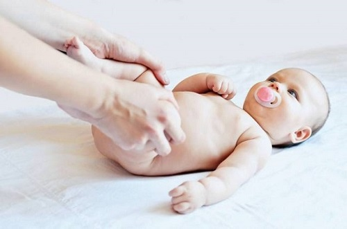
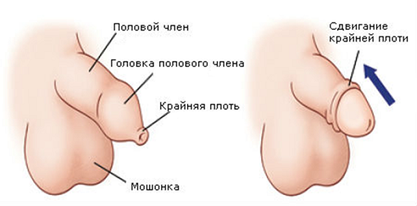
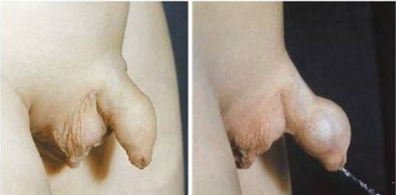
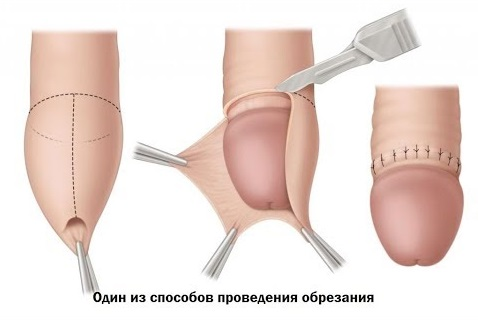

Хотя пенис, как правило, без каких-либо затруднений заботится сам о себе, иногда с годами могут появиться проблемы. Необрезанный пенис обычно не требует специального ухода, но у некоторых детей могут появиться различные проблемы, которые мы подробно обсудим. Далее мы опишем несколько проблем, с которыми вы можете столкнуться.
УХОД ЗА НЕОБРЕЗАННОЙ КРАЙНЕЙ ПЛОТЬЮ
У необрезанных мальчиков уход за крайней плотью очень простой: ничего не делайте. Раньше врачи считали, что крайнюю плоть в раннем детстве нужно отодвигать, но сейчас мы знаем, что это может привести к развитию рубцовой ткани, риску инфекции и риску образования даже более плотной крайней плоти в дальнейшем. Крайняя плоть, как правило, сдвигается сама по себе, когда она готова. Большинство специалистов предостерегают даже от осторожного сдвигания. В прошлом считалось, что по достижении 3 лет необходимо постепенное отодвигать ее, но сейчас практически все специалисты опровергают это, заявляя, что крайняя плоть, как правило, отодвигается сама по себе. У некоторых крайняя плоть обычно начинает сдвигаться к 3—4 годам, у других это может произойти только к раннему подростковому возрасту. Пока она не начала отодвигаться, просто мойте снаружи с мылом и водой при каждом приеме ванны.
Когда крайняя плоть вашего ребенка начнет естественно сдвигаться, обычно в возрасте 2—3 лет, можно осторожно ее отодвигать, но никогда не делайте это с усилием. Когда крайняя плоть вашего малыша начала сдвигаться, пора учить его основам ухода за пенисом. Это очень просто и включает ежедневное аккуратное отодвигание и мытье мылом и водой. Вот и все!
Иногда мы видим в нашей клинике обеспокоенных родителей, которые заметили беловатое вещество под крайней плотью своего сына. Это вещество называется смегма. Это абсолютно нормальное и естественное вещество, состоящее из мертвых клеток кожи, смешанных с телесными жидкостями, и от него легко избавиться с помощью ежедневного отодвигания крайней плоти и ежедневного мытья.

УЗКАЯ КРАЙНЯЯ ПЛОТЬ (ФИМОЗ)
Хотя необрезанная крайняя плоть обычно отодвигается без посторонней помощи (возрастные рамки варьируют; это может произойти как в 2 года, так и в 13 лет), иногда она может становиться слишком узкой. Большинство суженных отверстий достаточны для мочеиспускания и не нуждаются в лечении. Но иногда фимоз может мешать нормальному функционированию пениса.
КОГДА БЕСПОКОИТЬСЯ И ЧТО ДЕЛАТЬ
Даже если крайняя плоть выглядит узкой или действительно узкая, ваш врач, возможно, порекомендует «выжидательный» подход, поскольку к 4—5 годам у большинства крайняя плоть начнет еще больше сдвигаться. Если вашему врачу кажется, что крайняя плоть не сдвигается сама по себе и может стать слишком узкой, затрудняя мочеиспускание, он посоветует следующее:
• Медленно и аккуратно сдвигайте крайнюю плоть при ежедневных гигиенических процедурах. Пенис также будет делать это сам, как правило, 10 или больше раз в день, вследствие нормальной эрекции, которая растягивает крайнюю плоть.
• Пока вашему ребенку «не больно писать», не стоит беспокоиться. Следите за признаками нарушения мочеиспускания.
Если вы замечаете «симптом шарика» — кончик крайней плоти надувается во время мочеиспускания (как маленький шарик, наполняющийся водой), — это может быть признаком того, что крайняя плоть слишком узкая. В этом случае вашего ребенка должен обследовать детский уролог, чтобы определить, есть ли в данный момент необходимость хирургической коррекции. |
Парафимоз. Это происходит, когда явно узкая крайняя плоть с усилием сдвигают слишком далеко, так, что она не возвращается в свое нормальное положение. Вытянутая полоска крайней плоти прижимает вены к пенису, вследствие чего весь ствол пениса распухает так, что застрявшая крайняя плоть буквально душит его. Это экстренный медицинский случай, требующий лечения, — обычно наносят поверхностный анестетик или делают укол с местным анестетиком и вручную возвращают стягивающую крайнюю плоть на место. В редких случаях возникает необходимость частичного обрезания, за которым следует полное обрезание, когда крайняя плоть возвращается в нормальное положение.

ИНФИЦИРОВАННАЯ КРАЙНЯЯ ПЛОТЬ
Воспаление под необрезанной крайней плотью называется баланит. Если воспаление серьезное, оно сопровождается достаточно сильным отеком, который может затруднить мочеиспускание или привести к инфекции мочевыводящих путей.
КАК ОПРЕДЕЛИТЬ И ЧТО ДЕЛАТЬ
Признаками баланита являются сильно увеличенная, отёчная, красная, болезненная крайняя плоть и зеленые или желтые выделения. Воспаление может быть настолько сильным, что приведет к «симптомам баллона» во время мочеиспускания, как при фимозе, или ребенок и вовсе может отказаться писать. Если вы замечаете проблему на ранних стадиях (легкого покраснения и отека, без выделений или нарушений мочеиспускания), теплые ванночки и мази с антибиотиками (приведены ниже) могут остановить инфекцию и избавить вас от визита к врачу. Если у вашего ребенка наблюдаются все симптомы тяжелого баланита, немедленно обращайтесь за медицинской помощью. Ваш врач может взять на посев мазок с пораженного участка или выделения, если они есть, чтобы определить виновника инфекции. Пока не получены результаты посева, врач может выписать подходящие пероральные антибиотики. В дополнение к лечению антибиотиками врач может посоветовать:
После того как инфекция пройдет, обсудите с врачом надлежащий уход за крайней плотью. После обычной ванны смойте выделения с головки полового члена и обязательно насухо ее вытрите, прежде чем дадите крайней плоти вернуться в обычное положение. Если вы оставите головку пениса слишком влажной, это может привести к воспалению и инфекции, а затем и к баланиту. Если вы научите ребенка правильному уходу за крайней плотью, баланита будет легко избежать.
ОБРАЗОВАНИЕ СПАЕК КРАЙНЕЙ ПЛОТИ ПОСЛЕ ОБРЕЗАНИЯ
После того как обрезанная крайняя плоть заживет, оставшаяся должна свободно сдвигаться, полностью обнажая ободок вокруг головки пениса. Однако в процессе заживления крайняя плоть может прилипать к головке пениса, частично или полностью закрывая ее. Дальновидный педиатр будет часто проверять это во время нескольких первых осмотров и сможет легко разделить любые спайки, прежде чем они плотно прирастут. Но иногда эти слипания остаются незамеченными в течение многих месяцев, пока крайняя плоть не прирастет настолько, что будет сложно сдвинуть ее. Папа думает, что пенис ребенка выглядит странно, поскольку головка больше не видна полностью. Существует два типа спаек крайней плоти, лечение которых очень различается.
Простые спайки. Они образуются, когда внутренняя поверхность крайней плоти (блестящая и красная в отличие от наружной обычной кожи) прилипает к головке пениса. Как правило, ее легко отлепить, сдвинув крайнюю плоть вниз (как при эрекции): прилипший участок отойдет от головки, оставляя раневую поверхность, которая легко залечивается вазелином в течение нескольких дней. Это может быть немного болезненно, но врачу достаточно легко это сделать. Если за 30 минут до процедуры на эту область нанести крем с анестетиком, то боль будет меньше.
Кожные мосты. Это более серьезный тип спаек, при котором наружный слой кожи на стволе члена нарастает на головку пениса, формируя «мост» из кожи, который растягивается в очень заметную полоску кожи, похожую на резиновую ленту. Эти спайки педиатр так просто не разделит. Пенис придется заморозить уколом или нанесением крема с анестетиком, а кожный мост придется зажать и разрезать стерильными инструментами. Опытный педиатр, который хорошо умеет это делать, может провести эту процедуру младенцу. Если кожный мост образовался у ребенка старше года, лучше оставить все как есть и обратиться к детскому урологу для выполнения процедуры, когда ребенок будет достаточно взрослым, чтобы понять ее необходимость.

БЕЛЫЕ ОБРАЗОВАНИЯ ВОКРУГ ОБРЕЗАННОЙ КРАЙНЕЙ ПЛОТИ
Практически у всех обрезанных мальчиков, особенно в раннем младенчестве, появляются белые, похожие на жемчужинки комочки, которые собираются вокруг ободка обрезания, где крайняя плоть соединяется с головкой пениса. Это происходит в результате скопления смегмы — обычного смазочного вещества, которое скапливается под крайней плотью и, попадая в ее ткани, может собираться в маленькие белые комочки.
ЧТО ДЕЛАТЬ
Эти комочки, как правило, не вызывают проблем и исчезают сами по себе по мере того, как крайняя плоть все больше сдвигается, особенно во время роста и эрекций. Иногда эти скопления могут сохраняться, тогда ваш врач покажет вам, как аккуратно сдвинуть крайнюю плоть и стереть их с ободка пениса, используя мягкое мыло и теплую воду. Когда вы их сотрете, они могут оставить крошечные раздражения вокруг ободка, в которые может попасть инфекция. В этом случае ваш врач может порекомендовать нанесение антибактериальной мази на воспаленную область. По мере того как ваш ребенок будет расти, эти маленькие неприятные выделения останутся в прошлом
ИСЧЕЗАЮЩИЙ ПЕНИС
Хотите верьте, хотите нет, много лет назад в наш офис действительно позвонила встревоженная мать, которая сказала: «Его пенис исчезает!» Нет, на самом деле он не исчезал. Он просто был временно покрыт комком жира. На первом году жизни у некоторых детей жир скапливается вокруг основания пениса, что иногда приводит к тому, что пенис прячется в нем и появляется только иногда во время эрекции или мочеиспускания. Это безобидная особенность развития, а не медицинская проблема. По мере того как ваш маленький мальчик будет расти, а эти обожаемые маленькие холмики детского жира таять, его пенис снова появится.
Длина и размер пениса на первом году жизни абсолютно никак не связаны с его размером во взрослом возрасте. |
Здоровье ребенка от докторов Сирс / Сирс У. и др.